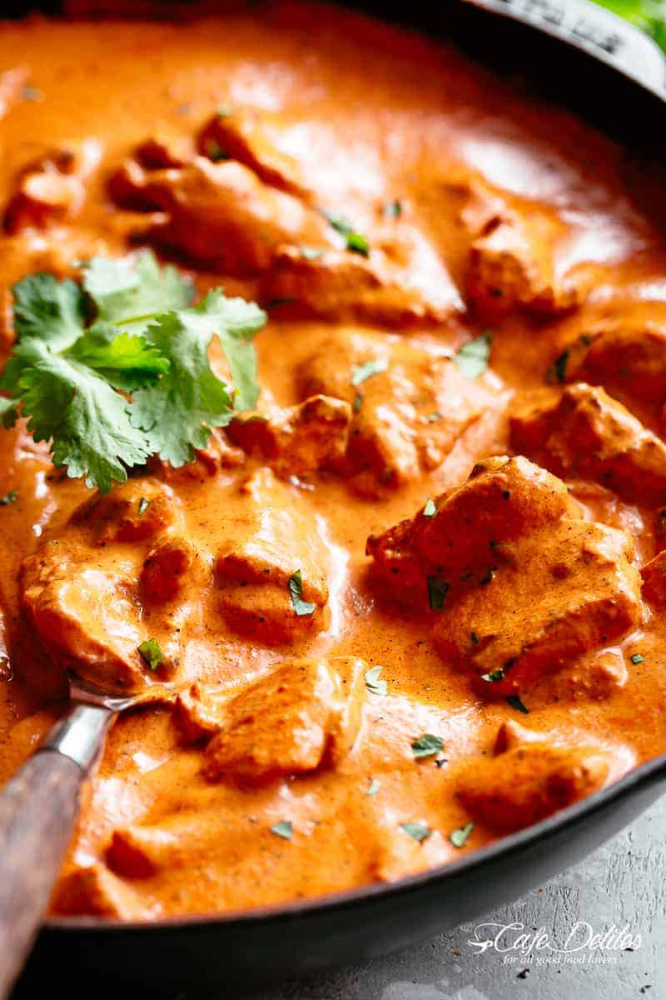

Butter Chicken Recipe

Ingredients
For the chicken marinade:
- 800g chicken breast cut into bite-sized pieces
- 1/2 cup plain yogurt
- 1 1/2 tablespoons minced garlic
- 1 tablespoon minced ginger
- 2 teaspoons garam masala
- 1 teaspoon turmeric
- 1 teaspoon ground cumin
- 1 teaspoon of salt
For the sauce
- 2 tablespoons oil
- 2 tablespoons butter
- 1 large onion, sliced or chopped
- 1 1/2 tablespoons minced garlic
- 1 tablespoon minced ginger
- 1 1/2 teaspoons ground cumin
- 1 1/2 teaspoons garam masala
- 1 teaspoon ground coriander
- 500g passata/chopped tomatoes
- 1 1/4 teaspoons salt
- 1 cup of double cream
- 1 tablespoon sugar
- 1/2 teaspoon dried fenugreek leaves
Instructions
- In a bowl, combine chicken with all of the ingredients for the chicken marinade; let marinate for 30 minutes to an hour (or overnight if time allows).
- Heat oil in a large skillet or pot over medium-high heat. When sizzling, add chicken pieces in batches of two or three, making sure not to crowd the pan. Fry until browned for only 3 minutes on each side. Set aside and keep warm. (You will finish cooking the chicken in the sauce.)
- Heat butter in the same pan. Fry the onions until they start to sweat (about 6 minutes) while scraping up any browned bits stuck on the bottom of the pan.
- Add garlic and ginger and sauté for 1 minute until fragrant, then add ground coriander, cumin and garam masala. Let cook for about 20 seconds until fragrant, while stirring occasionally.
- Add passata and salt. Let simmer for about 10-15 minutes, stirring occasionally until sauce thickens and becomes a deep brown red colour.
- Remove from heat, scoop mixture into a blender and blend until smooth.
- Pour the puréed sauce back into the pan. Stir the cream, sugar and fenugreek leaves through the sauce. Add the chicken with juices back into the pan and cook for an additional 8-10 minutes until chicken is cooked through and the sauce is thick and bubbling.
- Serve with fresh rice and garlic naan bread!